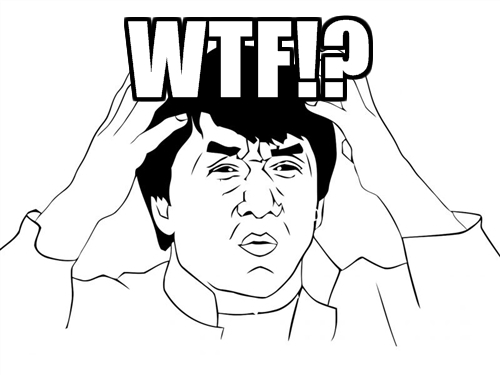

I’ve been hacking in golang for a while, but I’ll admit that I didn’t get too deep into some of the language nuances until more recently. Since some of them have started to bite me, here’s a little post-mortem of one of the problems I was having.
After hacking and testing code all day, I made a seemingly innocuous change, and when running my program, I saw the following error:
2015/07/10 14:34:12 too many open files
I didn’t know what I broke, but it was obviously my fault. I reverted my recent changes, but still the error persisted. Internet searches and many painful hours of debugging ensued.
|  |
| I had definitely hit some sort of Heisenbug. |
What had gone wrong? Digging around my system, I noticed something weird in my ps output:
$ ps auxww | grep go
james 3446 0.0 0.1 197392 9240 pts/4 Sl 11:48 0:00 go run ./main.go
james 3457 0.0 0.0 6268 1980 pts/4 Sl 11:48 0:00 /tmp/go-build030949627/command-line-arguments/_obj/exe/event
james 3487 0.0 0.1 197392 9184 pts/4 Sl 11:49 0:00 go run ./main.go
james 3501 0.0 0.0 6268 2040 pts/4 Sl 11:49 0:00 /tmp/go-build037131602/command-line-arguments/_obj/exe/event
james 3556 0.0 0.1 197392 9168 pts/4 Sl 11:49 0:00 go run ./main.go
james 3567 0.0 0.0 6268 1976 pts/4 Sl 11:49 0:00 /tmp/go-build957487534/command-line-arguments/_obj/exe/event
james 3788 0.0 0.0 197392 1636 pts/4 Sl Jul04 0:07 go run ./main.go
james 3800 0.0 0.0 5180 1944 pts/4 Sl Jul04 0:01 /tmp/go-build552106841/command-line-arguments/_obj/exe/event
[...]
Hoards and hoards of lingering go build artefacts, were still running. At one time I noticed over 42 of these! I quickly killed them all off:
# processes are named `event`, and I don't have any unrelated event processes running.
$ killall -9 event
kernel: ahh, much better! :)
Which brought my program back to life! Heisenbug gone… or was it? I soon noticed, that each time I ran my program, the left over process count would increment by one. What was causing this? After another session of debugging, I found that these leftovers were caused by a lack of clean up due to some buggy code. That buggy code is the interesting part. Let’s look at it:
for v := range obj.GetSomeChannel() {
fmt.Printf("Processing: %v\n", v.Name)
wg.Add(1)
// BAD
go func() {
defer wg.Done()
v.Start() // some method
fmt.Printf("Finished: %v\n", v.Name)
}()
}…
Okay. The issue is that when you iterate through the loop, the v value which is passed in to the function (the closure) is actually referencing the memory space of v. As a result, whenever the v value changes (as it does in the loop) the v variable instantly contains the new value, and the go routine will see the value of whatever it happens to be when it uses it.
To get around this race (and it is a race) you need to copy in the value to the goroutine:
for v := range obj.GetSomeChannel() {
fmt.Printf("Processing: %v\n", v.Name)
wg.Add(1)
// GOOD
go func(v *Objtype) {
defer wg.Done()
v.Start() // some method
fmt.Printf("Finished: %v\n", v.Name)
}(v)
}Many thanks to bleidl for helping me with some of the analysis!
As a quick aside, I’m using this WaitGroup pattern, which replaced the much uglier version of this loop which I had previously written. For a language that claims to not be pattern and idiom heavy, there sure are a bunch that I’ve found so far, many of which come with gotchas.
Happy hacking!
James
Your comment has been submitted and will be published if it gets approved.
Click here to see the patch you generated.
{kind=link}
Comments
Nothing yet.
Post a comment